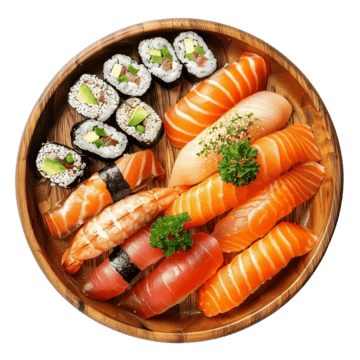

- 
-

About Rabu Sushi
Rabu Sushi (ラブ寿司) takes its name from the Japanese word “rabu” — meaning love. That is exactly how we make our food. Every dish is prepared with care, freshness, and a warm feeling we want to share with our customers.
Rabu Sushi began as a simple idea: create a comfortable place where people — from sushi lovers to curious first-timers — can enjoy authentic taste without fuss. Our mission is clear: fresh ingredients, friendly service, and a welcoming atmosphere.
What we focus on
<- Fresh ingredients delivered daily
- Traditional Japanese flavors with careful preparation
- Friendly staff who care about your experience
- Affordable choices for students and families
At Rabu Sushi we believe food tastes better when it's made with love. Whether you visit for dine-in, takeout, or simply browse our menu online, we hope Rabu Sushi brings a small moment of happiness into your day.
-
Sashimi
> See Sashimi Menu > About Sashimi -
Maki
> See Maki Menu > About Maki -
Urumaki
> See Urumaki Menu > About Urumaki -
Temaki
> See Temaki Menu > About Temaki